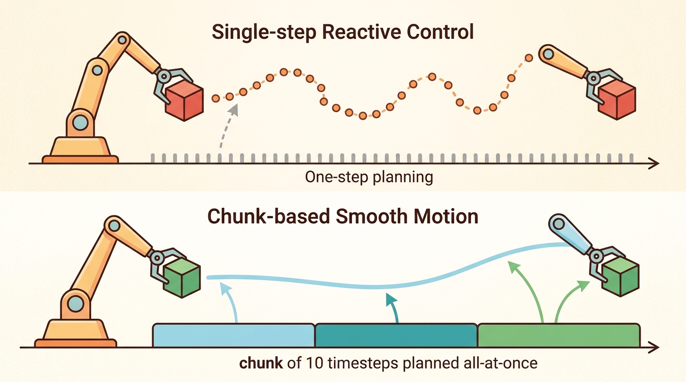

"The action representation you pick is a bet on what the task will punish you for getting wrong."
A Cautious Policy Interface

This section assumes familiarity with the five action families introduced in Chapter 22: one-step continuous actions (section 22.1), ACT chunking (section 22.2), diffusion-based sampling (section 22.4), flow matching (section 22.5), and discrete tokenization via VQ-BeT (section 22.6). The decision framework developed here is applied directly in section 23.6, where teleoperation data collection choices are constrained by the same latency and multimodality tradeoffs. The same tradeoffs recur in Part VII alongside robot foundation models and cross-embodiment generalization (Chapter 35).
A robot arm trained with one-step continuous actions can thread a bolt at 20 Hz but freezes when two valid grasp poses exist simultaneously. Switch to diffusion sampling and the multimodality problem vanishes, yet control latency triples and a safety filter can no longer veto individual joint commands. Every action family solves one bottleneck and introduces another. Right now, as manipulation policies scale toward general-purpose deployment, the choice of action representation is one of the most consequential early decisions a practitioner makes. Work through this decision guide and you will be able to read a robot-task contract, map its binding constraints to the right action family, and justify that mapping before committing to a training run.
By this point in the chapter you have seen five different ways to parameterize a robot's output: a single continuous action, an ACT chunk, a diffusion-sampled chunk, a flow-matched chunk, and a discrete behavior token. Each was motivated by a real limitation of the one before it. The question practitioners face is not which method is theoretically superior but which one fits a specific robot, task, and deployment constraint. A screwing task at 20 Hz with a low-cost arm has different binding constraints than a warehouse picking task at 5 Hz on a commercial manipulator. This section gives you a structured way to read those constraints and map them to an action family before you commit to a training run.
This section develops the technical contract for choosing an action representation: a decision guide into a usable mental model. First we define the object of study, then we connect it to the agent loop, then we test it with a compact implementation.
The key question in Choosing an action representation: a decision guide is practical: what must the agent know, what can it observe, what action is available, and what evidence shows that the action worked under the stated conditions?
A representation earns its place when it changes the measurable action interface. In choosing an action representation: a decision guide, the reader should keep asking which decision becomes easier, safer, or more reliable.
Theory
For Choosing an action representation: a decision guide, the practical design rule is to make the interface inspectable before optimization begins: inputs, outputs, units, latency, bounds, and failure labels should all be visible in the saved artifact.
The mechanism in Choosing an action representation: a decision guide is the contract between representation and action. Name what enters the module, what leaves it, which assumptions make that transformation valid, and which log would reveal a bad handoff.
Worked Example
For Choosing an action representation: a decision guide, keep one concrete rollout in view. A sensor reading becomes an estimate, the estimate constrains an action, the action changes the world, and the next observation confirms or contradicts the assumption. The section's idea is useful only if it improves that loop.
from pathlib import Path
dataset_root = Path("robot_demos")
for episode in sorted(dataset_root.glob("episode_*")):
print("inspect", episode.name)
print("next step: convert demonstrations to the LeRobotDataset format")Expected output: the printed trace for Choosing an action representation: a decision guide should expose the method configuration, the measured evidence field, and the failure label. If one of those fields is missing or unchanged under the perturbation, the example is not yet an evaluation artifact.
The from-scratch fragment should expose the assumption behind representation choice across one-step, chunked, diffusion, flow, and tokenized actions under one evaluation manifest. For serious runs, use LeRobot, robomimic, ACT, Diffusion Policy, VQ-BeT, ALOHA, GELLO, or UMI with the same manifest and evaluator.
Choosing Horizons, Samplers, And Action Spaces
The choice of action representation is not a model-quality decision; it is a systems decision forced by concrete engineering constraints. Consider a bimanual robot assembling a USB connector at 20 Hz, where each family imposes a different cost:
- One-step continuous action: must predict a new 14-DOF joint command every 50 ms; any momentary prediction error causes a jerk the hardware cannot recover from before the next command arrives.
- ACT (Action Chunking with Transformers) chunk (8 steps): commits 400 ms of motion, smoothing out individual prediction errors, but a bad prediction is replayed eight times before the policy can correct.
- Diffusion chunk: represents the bimodal distribution of "approach from left" versus "approach from right" without averaging them into a useless middle path, but requires 10 to 20 denoising steps at inference, adding 30 to 80 ms of latency on a typical GPU.
- Flow-matched chunk: cuts inference to 5 integration steps at a similar quality level, recovering most of the latency budget.
- Discrete token (VQ-BeT): encodes the whole motion primitive as a codebook entry and runs near-instant lookup, at the cost of losing the submillimeter precision the connector task requires.
The representation you choose depends on which of those constraints is the binding one for your robot and task.
The decision guide is an engineering tradeoff between temporal abstraction, multimodality, latency, and controllability. A short horizon reacts quickly but may jitter. A long horizon carries intent but can become stale. A diffusion sampler handles multimodal actions but costs inference time. A discrete tokenizer can make behavior modeling easier but may erase fine contact details. The scale of these tradeoffs is concrete: a one-step continuous policy trained on bimodal grasping data averages the two valid approach angles and fails every insertion attempt; the same demonstrations fed to a diffusion policy achieve substantially higher success (Chi et al., 2023, reported 85% on comparable bimanual tasks) because it samples one mode cleanly rather than committing to the invalid average. This is the mode-averaging trap, and it is the single most common reason practitioners switch from one-step to generative representations.
Imagine a GPS navigation app that has learned from thousands of drivers, half of whom turned left at a fork and half of whom turned right. If it picks the single direction that minimizes average regret across all those drivers, it sends you straight ahead into a ditch. A generative navigation system would instead keep both routes alive on a split screen and commit to one only once it has a reason to prefer one side. MSE training is the ditch-bound GPS; diffusion is the split-screen planner that preserves both valid options until the sampler is forced to choose.
The physical consequence is severe: a robot arm executing the averaged command moves toward neither valid grasp, contacts the object at an unsupported angle, and either drops it or triggers a force-limit fault that halts the controller. No amount of downstream correction recovers the attempt because the wrist is already in a configuration from which neither original mode is reachable without a full retreat. At 20 Hz the fault occurs within 50 ms of the first averaged command, before any safety filter can intervene.
The averaging happens during regression training. A mean-squared-error loss penalizes deviation from every demonstrated action equally, so the optimizer finds the single vector that minimizes total squared distance across all demonstrations. When two demonstrations show opposing approach angles for the same observation, the minimum-loss solution sits geometrically between them. The network is not confused; it is doing exactly what MSE asks. Generative representations such as diffusion avoid this by learning a conditional distribution over actions rather than a conditional mean, so both modes remain accessible at inference and the sampler commits to one.
Chunking reduces jitter because a sequence of predicted joint positions forms a smooth trajectory that the low-level controller interpolates between, hiding the noisiness of any single prediction. The cost is staleness: if the environment changes mid-chunk (an object shifts, a grasp slips), the policy cannot react until the chunk expires. Diffusion adds multimodal expressiveness by iteratively refining a noise sample conditioned on the observation; the model never has to commit to a single mode during training, so it does not average two valid grasps into an invalid one. The cost is that each denoising step requires a full forward pass through the score network, and 10 to 20 such steps at inference multiplies the latency accordingly. Flow matching replaces the iterative Gaussian noise schedule with a straight-line interpolation between noise and data, reducing the number of integration steps needed to 3 to 5 while retaining multimodal coverage. Discrete tokenization sidesteps the latency problem entirely by doing nearest-neighbor lookup in a learned codebook, but it introduces quantization error that is harmless for coarse motions and disqualifying for precision contact tasks.
| Representation | Use When | Watch For |
|---|---|---|
| One-step continuous action | Low-level control is stable and feedback is fast | Jitter, mode averaging, weak temporal intent |
| ACT chunk | Fine manipulation needs short plans and fast training | Chunk horizon, temporal ensembling, stale actions |
| Diffusion chunk | Valid behaviors are multimodal or contact-rich | Sampler latency and safety filtering |
| Flow-matched chunk | Fast generative sampling is a deployment constraint | Integrator error and vector-field extrapolation |
| Discrete action token | Motion primitives repeat across demonstrations | Codebook collapse and lost precision |
Students often assume that a more expressive representation (diffusion, flow matching) is universally superior to a simpler one (one-step continuous) and should be the default choice in any robot learning project. This is wrong in the embodied AI context because expressiveness carries a concrete inference-latency cost that can violate the hard real-time budget of the control loop. A diffusion chunk requiring 10 forward passes at 5 ms each adds 50 ms of latency; on a 20 Hz controller with a 50 ms step budget, that leaves no margin for sensing, safety checks, or communication, and the controller misses its deadline. The correct mental model is constraint-first: identify the binding constraint (latency, multimodality, precision, recovery window) from the task spec, then select the least complex representation that satisfies it. Expressiveness is a tool to unlock when simpler families fail on that specific constraint, not a default upgrade.
Algorithm: Action Representation Decision Checklist
Input: Task specification with control frequency $f$ (Hz), action dimension $d$, observed multimodality flag $M \in \{0,1\}$, maximum inference budget $\tau$ (ms), and smallest safe recovery window $r$ (ms)
Output: Selected action representation $\pi^* \in \{\text{one-step}, \text{ACT-chunk}, \text{diffusion-chunk}, \text{flow-chunk}, \text{discrete-token}\}$ with recommended horizon $H$ and sampler step count $K$
- Compute the per-step time budget: $\Delta t = 1000 / f$ ms. If $\Delta t < 30$ ms, flag latency-constrained; skip any representation whose sampler requires $K \cdot t_{\text{fwd}} > \Delta t$.
- Set $H = 1$ as the default (one-step). If the task exhibits temporal correlation longer than $\Delta t$ (e.g., contact or insertion sequences), increase $H$ until $H / f \approx r$, ensuring the chunk stays within the recovery window.
- Evaluate multimodality: if demonstrations contain two or more valid approach modes for the same observation (e.g., left-side vs. right-side grasp), set $M = 1$. A one-step policy will average modes; require a generative representation when $M = 1$.
- If $M = 1$ and $\tau \geq 50$ ms: select diffusion chunk with DDIM (Denoising Diffusion Implicit Models) schedule, $K = 10$. Verify that $K \cdot t_{\text{fwd}} \leq \tau$ on the deployment GPU using
torch.cuda.synchronize()before and after the denoising loop. - If $M = 1$ and $\tau < 50$ ms: select flow-matched chunk with $K = 5$ integration steps. Check vector-field extrapolation error on held-out rollouts; if $\|\hat{a} - a^*\|_2$ exceeds joint limits, reduce $H$.
- If $M = 0$ and precision requirements are coarse (e.g., pick-and-place with $\geq 5$ mm tolerance): evaluate discrete tokenization. Train VQ-BeT with codebook size $|C| \in \{64, 256\}$; accept if task success with nearest-neighbour lookup $\arg\min_{c \in C} \|z - c\|_2$ matches continuous baseline within 5 percentage points.
- If $M = 0$ and precision is fine (submillimeter contact): use ACT chunk with temporal ensembling. Tune $H$ by scoring $\text{score}(H) = H/f - \lambda \cdot H$ where $\lambda$ encodes measured latency penalty per step.
- Record the binding constraint that drove the choice (latency, multimodality, precision, or recovery window) in the experiment log alongside $\theta$ (model parameters), $\alpha$ (learning rate), and $\nabla \mathcal{L}$ curve.
- Run one deterministic smoke test (fixed seed, zero-noise episode) and one perturbation test (object shifted 2 cm) before committing to a full training run of $\pi^*$.
- Version the final selection as a single artifact: representation name, $H$, $K$, control frequency $f$, success metric, and failure labels. This artifact is the comparison anchor for any future $\alpha$ or architecture sweep.
When profiling Diffusion Policy at inference time, set num_inference_steps in the DDIM scheduler to 10 first, then benchmark with torch.cuda.synchronize() before and after the denoising loop on your actual deployment GPU. Many practitioners discover that the default 100-step schedule violates their 50 ms control budget only after integrating the policy into the real robot stack. Flow matching (via the consistency_policy branch of the diffusion_policy repo) typically achieves comparable quality at 5 steps and is the fastest drop-in swap if latency is the binding constraint.
Code Fragment 3 gives a small scoring rule for horizon choice. It is not a universal formula, but it forces the builder to balance intent, latency, and feedback.
# Score candidate action horizons using latency and task-temporal needs.
# Lower latency cost and higher intent coverage make a horizon preferable.
horizons = [1, 4, 8, 16]
control_hz = 20
for horizon in horizons:
intent_seconds = horizon / control_hz
latency_penalty = 0.015 * horizon
score = intent_seconds - latency_penalty
print(horizon, "steps", "intent_s", round(intent_seconds, 2), "score", round(score, 2))4 steps intent_s 0.2 score 0.14
8 steps intent_s 0.4 score 0.28
16 steps intent_s 0.8 score 0.56
Before selecting a policy family, write down action dimensionality, control frequency, maximum acceptable inference latency, whether valid futures are multimodal, and the smallest recovery window after a bad command. The best representation is the one that fits those constraints, not the one with the most fashionable name.
Practical Recipe
- Write the observation, action, and success metric before choosing a model.
- Build a baseline that is simple enough to debug by inspection.
- Add the library implementation only after the baseline behavior is understood.
- Record failures as structured cases: perception error, state error, planning error, control error, or evaluation error.
- Run at least one perturbation test before trusting the result.
The common mistake in Choosing an action representation: a decision guide is to celebrate the component score before checking the closed-loop handoff. The failure usually appears at the boundary: stale state, wrong frame, delayed action, saturated actuator, or metric that ignores the real task cost.
A robot learning engineer applying choosing an action representation: a decision guide starts by recording the robot body, camera setup, action units, operator source, and split policy for every episode. That record makes it possible to compare ACT with a baseline without changing the task definition midstream.
When choosing an action representation: a decision guide feels abstract, ask what would be different in the next frame of video, the next robot state, or the next safety margin.
Adaptive and hybrid action representations (2024-2026). Three active directions are reshaping how practitioners choose action representations at deployment time.
1. Consistency-model action generation. Consistency Policy (Chi et al., 2024, "Consistency Policy: Accelerated Visuomotor Policies via Consistency Distillation", RSS 2024) distills diffusion trajectories into a single-step generator that matches 10-step DDIM quality at one-fifth the latency. This closes the gap between expressiveness and real-time control without requiring flow matching's retraining. The Stanford Robotics Lab reports sub-10 ms inference on manipulation tasks that previously required 50 ms denoising budgets.
2. Representation-agnostic policy heads for foundation models. Large vision-language-action models such as pi0 (Physical Intelligence, 2024) and OpenVLA-OFT (Kim et al., 2025) attach interchangeable action heads (diffusion, flow, or autoregressive token) to a shared visual backbone, letting practitioners swap the output representation without retraining the perception stack. The key finding is that the backbone's visual features transfer across action families, so the latency-versus-multimodality tradeoff can be deferred to deployment rather than fixed at data collection time.
3. Action representation co-design with hardware constraints. Work from CMU's Robotics Institute (Zhao et al., 2024, "ALOHA Unleashed") and Berkeley's RAIL lab shows that low-cost hardware with joint-position feedback at 50 Hz benefits from shorter chunk horizons (H=4 rather than H=8) because actuator compliance absorbs less prediction error, making stale-chunk costs higher than on compliant commercial arms. Co-designing chunk horizon with controller bandwidth is now an empirical protocol rather than a rule of thumb.
Open problem for PhD research. All current decision guides treat the five action families as fixed alternatives chosen before training. No framework yet supports online switching between a fast one-step policy (for stable regimes) and a diffusion sampler (triggered by detected multimodality or contact ambiguity) within a single deployment episode. Formulating this as a meta-controller selection problem, with a learned switching criterion and bounded latency guarantees, is an open and tractable research direction.
Can you name the observation, state estimate, action, success metric, and most likely failure mode for choosing an action representation: a decision guide? If not, the system boundary is still too vague.
Choosing an action representation: a decision guide becomes useful when it is tied to a closed-loop contract. In this Part V section on Choosing an action representation: a decision guide, the contract names the observation stream, the state estimate, the action representation, the timing budget, and the evaluation artifact. Without that contract, a model can look capable in a notebook while failing the first time a sensor drops a frame or a controller saturates.
For Choosing an action representation: a decision guide, separate the conceptual claim, the systems claim, and the evidence claim. A plausible mechanism, a clean interface, and a closed-loop result are different claims; the section should keep their evidence separate.
| Tool or Library | Role in Action Representation | Builder Advice |
|---|---|---|
| Gymnasium | Exposes continuous action spaces (Box) and discrete spaces (Discrete) as concrete types; lets you prototype one-step continuous vs. discrete tokenized actions in simulation before committing to a robot controller. | Use env.action_space to verify that your chosen representation's dimensionality matches the robot's DOF count. A 7-DOF Franka arm needs a Box(7,) action space; mismatches surface here before they cause actuator saturation on hardware. |
| PettingZoo | Provides per-agent action spaces for bimanual and multi-robot setups where left and right arm actions must be chunked independently or joined into a single 14-DOF vector. | Prefer independent per-arm chunking for ALOHA-style bimanual tasks; joined vectors force both arms to share the same chunk horizon, which breaks asymmetric tasks (e.g., one arm holds while the other inserts). |
| ROS 2 | Bridges policy outputs to real hardware via JointTrajectoryController; latency between policy inference and the controller's execution window is the dominant constraint when deciding between one-step and chunked representations. | Measure round-trip latency with ros2 topic hz and ros2 topic delay on your target robot before fixing the control frequency $f$. On a Franka via franka_ros2, the real-time kernel typically gives 1 ms jitter; on a UR5 over Ethernet, expect 5 to 10 ms, which shifts the latency budget calculation in the decision checklist above. |
| MuJoCo | Simulates contact-rich manipulation tasks where the binding constraint is often submillimeter precision rather than latency; lets you measure whether a discrete tokenized action loses too much precision on insertion tasks before running on hardware. | Run the decision checklist's smoke test (object shifted 2 cm) in MuJoCo first. If VQ-BeT with codebook size 256 fails insertion in MuJoCo, it will fail on a Franka or UR5 in identical conditions; do not waste a physical hardware session on a representation that has already failed the sim precision gate. |
| LeRobot | Provides standardized dataset loading, policy training, and evaluation for ACT, Diffusion Policy, and flow-matched policies under a single config schema; makes it possible to swap representations without rewriting the training loop. | Use LeRobotDataset with the same episode_data_index for all five representations so that the comparison artifact references one data split, one camera calibration, and one reset distribution. Mixed dataset configs produce numbers that measure data differences rather than representation quality. |
For Choosing an action representation: a decision guide, start with a small baseline that logs inputs, outputs, units, timestamps, and termination conditions before moving to Gymnasium or PettingZoo. The library run should keep the same artifact schema, so the comparison remains a same-task evaluation.
- Write a one-paragraph task contract with observation, action, success, and failure fields.
- Start with the smallest simulator, dataset, or wrapper that exposes the task contract faithfully.
- Run one deterministic smoke test and one perturbation test before scaling.
- Save a single result artifact containing configuration, seed, metrics, videos or traces, and failure labels.
- Compare methods only when one script evaluates them on the same task panel.
When Choosing an action representation: a decision guide fails, avoid labeling the whole method as weak. First assign the failure to perception, state estimation, planning, control, timing, data coverage, or evaluation. Then rerun one controlled perturbation that isolates the suspected cause. This pattern turns a disappointing rollout into a reusable diagnostic asset.
Agent Checklist Integration
Choosing an action representation: a decision guide should be evaluated through four lenses: the learning objective, the robot interface, the data artifact, and the deployment failure mode. Action generators differ mainly in how they represent time, uncertainty, and multimodality across the next chunk of motion.
For the decision guide compares one-step, chunked, diffusion, flow, and tokenized actions under a shared evaluator, define observations, action representation, dataset source, rollout evaluator, and failure labels before training. Then compare baseline and library implementation on the same configuration.
For the decision guide compares one-step, chunked, diffusion, flow, and tokenized actions under a shared evaluator, each demonstration binds operator behavior, robot body, sensor calibration, action representation, and reset distribution. Changing one field creates a new evaluation contract.
| Agent Lens | Question To Answer | Concrete Evidence |
|---|---|---|
| Curriculum and depth | What concept is new here, and why does Part V need it? | A definition, a worked example, and a failure case tied to the perception-action loop. |
| Code and tools | Which maintained tool removes boilerplate after the from-scratch baseline? | ACT, Diffusion Policy, flow matching, VQ-BeT, ALOHA evaluated against the same task contract. |
| Data and evaluation | What distribution produced the behavior, and where can it break? | Train, validation, and stress splits with explicit robot, camera, timing, and license metadata. |
| Publication quality | Can the reader reproduce the claim without hidden context? | Captions, bibliography cards, cross-links, and a same-artifact audit trail. |
Do not claim that choosing an action representation: a decision guide improves robot learning unless the baseline and the proposed method share the same robot, task split, reset distribution, success metric, and random seed policy. Otherwise the comparison may be measuring dataset difficulty rather than method quality.
For the decision guide compares one-step, chunked, diffusion, flow, and tokenized actions under a shared evaluator, judge the method by closed-loop recovery, latency, stability, contact behavior, and failure labels under the same robot, reset distribution, cameras, and evaluator.
Who: A robot learning engineer evaluating representation choice across one-step, chunked, diffusion, flow, and tokenized actions under one evaluation manifest on the same manipulation benchmark, robot, camera setup, and reset protocol.
Situation: The engineer needs to decide whether choosing an action representation: a decision guide is ready for a weekly policy comparison across 120 demonstrations and 30 held-out rollouts.
Decision: They keep the smallest runnable baseline for representation choice across one-step, chunked, diffusion, flow, and tokenized actions under one evaluation manifest, then compare the maintained implementation under the same manifest, seed, split, and rollout evaluator.
Result: The team gets one artifact for representation choice across one-step, chunked, diffusion, flow, and tokenized actions under one evaluation manifest with task success, intervention labels, timing violations, recovery behavior, and failure categories.
Lesson: representation choice across one-step, chunked, diffusion, flow, and tokenized actions under one evaluation manifest earns trust only when the data contract, action representation, and rollout evaluator are versioned together.
Before leaving this section, write one sentence that links choosing an action representation: a decision guide to each of these connected chapters: Chapter 21: Imitation Learning, Chapter 23: Teleoperation and Data Collection, Chapter 35: Robot Foundation Models and Cross-Embodiment Learning. If any link feels forced, the section needs a sharper boundary or a clearer prerequisite recap.
Choosing an action representation: a decision guide is useful when it makes the perception-action loop more reliable, not when it merely adds a more impressive model name.
Project Ideas
Beginner (weekend): Build a Gymnasium CartPole or LunarLander wrapper that benchmarks one-step continuous actions against a fixed-horizon chunk (H=4) under identical MLP policies; log the score difference and the latency penalty from the decision checklist. The key challenge is keeping the observation and reward interfaces identical so the comparison measures horizon length, not environment setup.
Intermediate (1 to 2 weeks): Collect 50 teleoperated demonstrations of a bimanual peg-in-hole task in MuJoCo using a LeRobotDataset pipeline, then train ACT and Diffusion Policy on the same split and compare success rate and inference latency on a held-out reset distribution. The key challenge is that the task is intentionally bimodal (left-side and right-side approach), so you must verify that the diffusion policy samples distinct modes rather than averaging them, using a per-rollout mode-assignment heuristic.
Advanced (3 to 4 weeks): Deploy a flow-matched chunk policy on a ROS2-connected physical arm (UR5 or low-cost ALOHA clone) and measure whether the 5-step integrator stays within the 50 ms control budget reported for your hardware using ros2 topic delay; compare against a 10-step DDIM diffusion baseline on the same insertion task. The key challenge is bridging the policy inference loop to the JointTrajectoryController without introducing variable-latency queuing that invalidates the timing budget calculation from the decision checklist.
Design a method-matched experiment for Choosing an action representation: a decision guide. Specify the environment, observation schema, action interface, metric, and one perturbation that targets the section's core assumption.
What's Next
This section grounded choosing an action representation: a decision guide in an explicit robot-data contract: observations, actions, demonstrations, evaluation splits, and failure labels. The next reading step is Chapter 23: Teleoperation and Data Collection, where the same contract is carried into the next technique or chapter.
Zhao, T. Z. et al. (2023). Learning Fine-Grained Bimanual Manipulation with Low-Cost Hardware. RSS.
This paper introduces ALOHA and Action Chunking with Transformers for bimanual manipulation. It is central for understanding why predicting chunks can stabilize high-frequency robot control.
Diffusion Policy frames action generation as conditional denoising over robot action trajectories. Read it for multimodal action distributions, receding horizon control, and the implementation details behind modern diffusion robot policies.
Lipman, Y. et al. (2022). Flow Matching for Generative Modeling.
Flow matching gives the generative-model background behind many faster action samplers. It is useful when comparing diffusion-style iterative denoising with direct vector-field training.
The project page summarizes the hardware, data collection setup, and ACT policy used for fine-grained bimanual tasks. Builders should use it to connect the paper's algorithm to an actual low-cost robot platform.
real-stanford/diffusion_policy: Official Diffusion Policy Code.
The official code provides training and evaluation examples for state-based and vision-based tasks. It is the shortest route from the section's theory to a runnable policy-learning experiment.